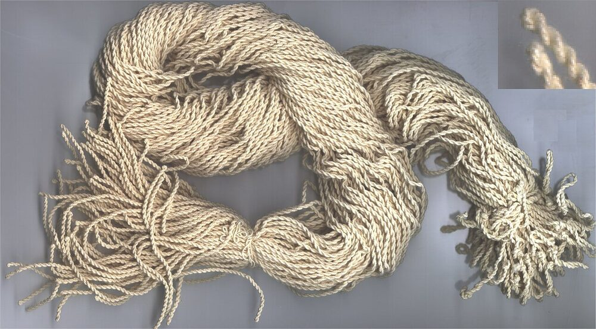
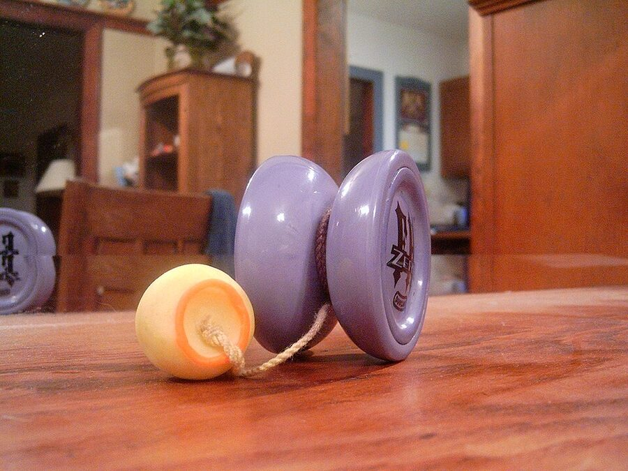
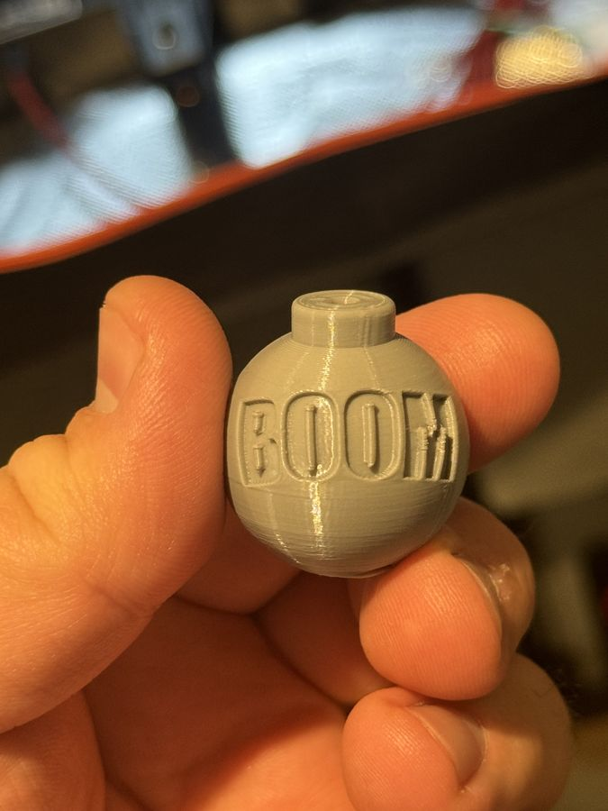
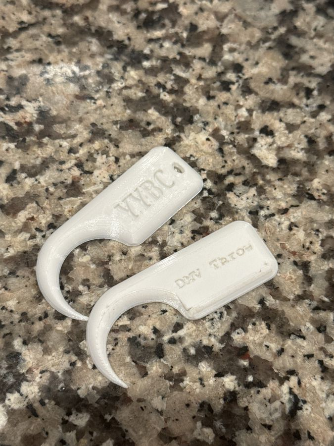

Cotton: the traditional material, still best for beginners and responsive play.[5][54] Classic manufacturers long used cotton string.[20]
Slick / 50-50: cotton blended with polyester or nylon; more durable.[5]
100% polyester: the choice of professionals today for smooth, unresponsive play.[53][14]
Nylon and rayon: soft, springy synthetics; rayon is very durable.[5][36]

A bundle of yo-yo strings. Inset: the two-strand, closed-loop end that goes around the axle.Fluzwup, public domain, via Wikimedia Commons
Niche materials: non-standard but interesting
Kevlar blends: commercial Kevlar string has generally been a blend. YoYoExpert’s #82 Kevlar is 8 strands of polyester to 2 of Kevlar, and Twisted Stringz sold a blend players describe as roughly a third Kevlar. Players find it coarse and stiff but report it outlasts regular polyester by a wide margin.[171][172][5]
Silk: made by hand by a few players. It is very dense and extremely whippy when new, breaks in after about two hours of throwing, then plateaus, and stretches about 5 cm on a 140 cm string. Fans call it great for slacks; good silk thread is hard to source.[169][170]
Wooly nylon: a dense, elastic thread that string makers twist into slack-focused strings.[173]
Nylon blends: premium blends like Zipline’s Skyline III are soft, heavy for fast slacks, and long-lasting, at a higher price.[173]
Lab experiments: in 2006, string maker YoYoFargo tried Kevlar, monofilament nylon (“Rigid Minis,” whose first batch shrank to about three feet), and bonded nylon (dropped because it gave players a rash).[162]
Braided fishing line: one player’s 2019 test found it slick and great for whips and slacks, with almost no stretch but terrible binds. Twisting one pass of braid with polyester fixed the binds.[174]
Hemp: at least one fixed-axle player twists their own hemp string.[175]
Left-handed string is twisted the opposite way, and before thickness numbers existed, the only alternative to ordinary string was Tom Kuhn’s slightly thinner string.[5]
Thickness: string is described by its strand count. Type 8 (4×2) is the common standard; types 6 (3×2) and 9 (3×3) are favored for unresponsive play.[5] Kitty String and others also sell “fat” string.[55]
Colors: neon yellow and white are the most popular because they are easy to see; lime green is a close second. Twisted colorways help you see string tension.[34][35][53]
Care
Replace string when it frays, gets dirty or stiff, or has a tight knot near the bearing.[1][5]
Store yo-yos with the string unwound to keep it springy.[5]
If the string twists up when slack, fix the tension: throw a UFO across your body to loosen or the other way to tighten.[6]
DIY: make your own string
String makers twist thread with a drill on a simple rig. The YoYoExpert mega-thread’s basic recipe:[36]
Set two anchors 12 feet apart and wrap thread between them 6–8 times. More wraps make a thicker string.
Hook the thread to a drill and spin it, letting it shorten about 10–15% (“reduction”) while keeping it taut.
Double it over a center anchor placed at half the reduced length, still taut, and let it twist together. Reverse the drill to relieve torsion.
Cut, knot, and tie it to length on your yo-yo.
Spun polyester: cheap, soft, many neon colors; wears out fairly fast.[36]
Trilobal polyester: lasts a very long time and whips well, but feels coarse.[36]
Textured nylon: very soft and springy; weaker for whips and slacks.[36]
Even colors: pre-twist each color before spinning them together.[37]
Part 11
Counterweights (5A)
A counterweight is a small weight tied to the end of the string where your finger would go. In freehand (5A) you throw it hand to hand, bounce it off your body, and wrap it around the yo-yo as part of the trick.[63][71]

A 5A (freehand) setup: the string ends in a counterweight, not a finger loop.Sarah Jones, CC BY-SA 2.0, via Wikimedia Commons
History
1998 Slippery Eel, freehand with no weight, is popular with Team High Performance. Its limits push Steve Brown toward a counterweight.
1999 Brown debuts freehand at the Bay Area Classic, playing a Team Losi Cherry Bomb he helped design.
2000 Brown files a patent for a yo-yo with a fixed or sliding counterweight. It is assigned to Duncan’s parent company, Flambeau.
2001 The Duncan Freehand, the first yo-yo made for 5A, ships with a red casino-style die, rounded and drilled for the string.
Later Bouncy-ball counterweights arrive with yo-yos like the Throw Monkey.
2011 YoYoJam licenses Takeshi Dice, with a ball bearing inside to adjust string tension instantly and a small “Astro” bead.
2015 Jake Elliott’s delrin UltraWeight, with an internal bearing, wins the World 5A title.
2020 The counterweight patent expires. Until then, other companies needed a license from Duncan.
Sources: 1998, the YoYo Wiki[59]; 1999, Wikipedia and the YoYo Wiki[73][65]; 2000, the patent[74][71]; 2001, the Freehand 1[64][63]; later years through 2015, the YoYo Wiki[63]; 2020, Wikipedia[71][63].
How heavy?
Most players like a counterweight about one-sixth the weight of the yo-yo, so a 60–70g yo-yo pairs with a 10–11g weight.[59] Steve Brown has been quoted favoring a 7-to-1 ratio.[63] Forum players put the typical range at 10–13g and 2–3cm across.[79]
Dedicated products
Duncan Double Dice: a small cube that slides inside a larger die shell, for regular or sliding play; 10.8g.[92]
Candy Dice: designed by 5A pioneer Shingo Terada. A grooved design lets you switch between 5A and 1A without removing the string, and the Pro Comet adds a bearing for string tension.[93]
Doc Pop Pawn: a simple machined plastic counterweight with a through-hole.[94]
DIY: dice, balls, and erasers
Ask an Adult to Drill or File
Keep it simple and safe. Skip anything with sharp points or lips that can catch on string or clothing. Plain dice, erasers, and rubber balls are good starting points, and odd shapes make learning harder.[79]
Pick a weight. Weigh dice before you drill; cheap bulk dice can be only 3–5.5g. A small digital scale helps.[80]
Drill or groove it. Drill a hole through the die, or file a groove around its middle for the slipknot. One player has used a filed-groove die for 14 years without it slipping.[79]
Mark first. Trace a line with a marker so you stay centered. File the edges first, then the flats, and go shallow all the way around before deepening the groove to your string’s thickness.[79]
Test it. A 20-sided game die came out about 10g after filing a groove. A d20 plus a d6 on one string reached 10–11g.[80]
DIY: 3D-printed counterweights
Free models are shared online, and your local library may have a 3D printer you can use for free.[79]
Coloring prints: all-purpose dye works on printed counterweights. Permanent marker rubs off on your hands unless sealed.[81]

A 3D-printed “Boomer” counterweight, a design by forum member TryCatchThrow.Photo: Brandon Rogers (Captrogers), from the YoYoExpert thread Let’s talk 3D printing
Practice yo-yos set up for 5A with ball and dice counterweights.Photo: Brandon Rogers (Captrogers), from the YoYoExpert thread Show us your 5A setup
Part 12
Knot Picks and Tools
Knots that jam around the bearing are part of the hobby, especially in 3A.[71] The easy fixes are to unscrew the yo-yo, or just put on a new string.[82]
Dedicated tools
Duncan Yo-Tility Holster: a belt-loop holster that is also a bearing removal tool and string cutter.[95]
Bearing removal tools pull a bearing without scratching it.[58] Some pocket multitools add a hex key and a pick.[84]
String pickers from yo-yo brands are popular, though some are too thick for narrow fixed-axle gaps.[82]
DIY and household picks
Wooden toothpicks: cheap and disposable.[82][83][84]
The plastic toothpick from a Swiss Army knife.[83][84]
Thin bamboo knitting needles (US 1, 2.25mm) for small gaps and fixed axles; also plastic yarn needles.[82]
A sewing seam ripper, thin enough for most gaps.[82]
Nylon zip ties, a 0.5mm mechanical pencil tip, or tweezers.[83][82]
Go easy with metal. Sharp needles and paper clips work, but players worry they will scratch anodized finishes. One maker uses soft aluminum wire for that reason.[84][82]
3D-printed picks and tools
A free Yo-yo String Pick on Printables has a hook for pulling up trapped string; the designer prefers it printed at 125% scale.[101]
One player shared a Tinkercad design that clips a printed knot pick to a bearing removal tool’s keychain hole, for about a cent of filament.[85]
A printable “yo-yo string knotter” ties slipknots at the same length every time, handy for 2A and 3A pairs.[107]

Hook-style knot picks printed for the club.Photo: Brandon Rogers (Captrogers), from the YoYoExpert thread Let’s talk 3D printing
Part 13
Cases and Holders
Holders and holsters
Clip holders: a carabiner and elastic band clip a yo-yo to your bag or belt loop.[96]
Throw-strap: a strap with a wooden bead and metal clasp, inspired by kendama and yo-yo holsters.[97]
Utility holster: Duncan’s Yo-Tility adds a bearing tool and string cutter.[95]
DIY: a paracord holder
One player built a holder from a carabiner, paracord from a sporting goods store, and a drilled 12-sided die, for under $5 in materials. The top is a cobra stitch and the pouch is a sling weave.[86] Cobra knots take only a few minutes to learn from video tutorials.[87] Another player paired a carabiner with a begleri.[86]
Cases
Soft case: Duncan’s bag (10 × 7.5 × 2.5 in) has foam channels for up to 12 yo-yos.[98]
Hard case: the iYoYo case holds up to six yo-yos, plus a zippered pouch for parts and string.[99]
Parts: the Capso box is 57mm across, sized to fit a case slot, for string, bearings, and pads.[100]
DIY cases
Repurpose a hard case: players use microphone cases and Pelican-style cases, cutting yo-yo pockets in the foam.[88]
Cut clean circles: use the rim of a clean, cut-open deodorant can or a tomato paste can as a foam cutter.[88]
Divided storage boxes with packing foam cut to fit also work.[89]
Traveling light: put each yo-yo in a clean sock, or pack a clean chip can or tennis ball tube with foam between yo-yos.[89]
3D print it: one maker printed a foam-free case that holds yo-yos with stretchy cords.[90] Thingiverse has a Yo-Yo Holder that doubles as a display, and two print together into a case.[105] Browse more under the yoyo holder tag.[106]
Display: a hanging sock organizer makes a wall display.[91]
Before you buy a big case, Ed Haponik suggests asking how many yo-yos you really need to bring.[89]
Part 14
More DIY Accessories
Players on the YoYoExpert forum have shared plenty of low-cost gear made from things around the house.[91]
Hard cases: an old lunchbox, a guitar flight case, or a modular toolbox, with hobby foam. Cut holes by slotting the foam with a knife around a yo-yo template, or press a can rim into it. One player planned to try a cookie cutter.[91]
Counterweights: small toy figures with a drilled hole, a squishy toy that matched a die’s weight, or soft “gummy” weights cast from recycled plastisol.[91]
Begleri: players make their own sets, and some string counterweights together.[91][147]
Stands and displays: leftover acrylic, 3D prints, or wood.[91]
Bearing cleaning tool: a small 3-volt motor with a 3D-printed bearing holder.[91]
Workbench: a mini jeweler’s vise on a slab of wood makes a portable mod and maintenance station.[91]
History project: one player made an 18th-century-style bandalore set with a matching bag and braided cord. See The Story of the Yo-Yo.[91]
Drilling, heat tools, and hobby knives need an adult.
Keep Exploring
How to Yo-YoThrows, first 100 tricks, contests, glossary